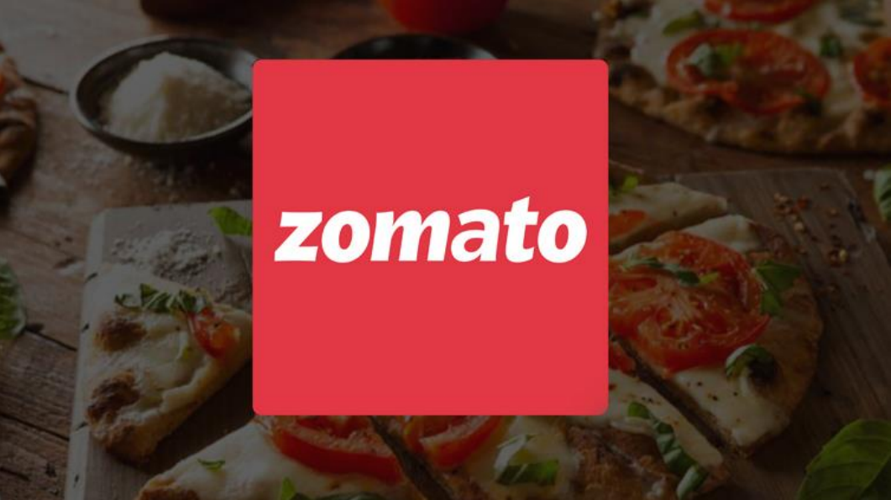
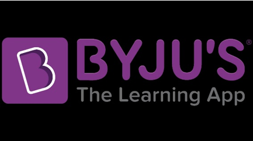

Published on: August 5, 2025
Meesho: Building for Bharat and Redefining E-commerce in India
“Democratise internet commerce for everyone.” – Meesho’s mission, and its north star.
When Vidit Aatrey and Sanjeev Barnwal founded Meesho in December 2015 (originally as Fashnear),
their vision was simple yet powerful: enable small retailers and individuals to sell online
without heavy investment, particularly in India's Tier II, III, IV towns.
From those early days of cataloguing local shops by walking the streets, to becoming a platform
empowering millions of digital entrepreneurs from homes, the Meesho story is one of listening,
pivoting, and scaling with purpose.
Read More

Published on: August 15, 2025
Effective networking can open doors to new opportunities. Learn how to build meaningful
connections in the tech world.
Read More

Published on: August 25, 2025
From digitizing restaurant menus to becoming India’s leading food delivery giant,
Zomato’s story is one of innovation, adaptability, and resilience. Founded by IIT Delhi
alumni Deepinder Goyal and Pankaj Chaddah, Zomato transformed how India discovers
and enjoys food — blending technology, customer experience, and entrepreneurial vision.
Read More
Published on: October 5, 2025
From a simple mobile recharge platform to a global fintech leader, Paytm’s journey
is a story of innovation, timing, and resilience. Founded by Vijay Shekhar Sharma,
Paytm revolutionized India’s payment ecosystem and became a symbol of the country’s
cashless transformation.
Read More

Published on: October 15, 2025
From a small coaching class to the world’s most valuable edtech startup,
BYJU’S transformed how millions learn using technology, storytelling, and AI-driven
personalization. Its journey shows how purpose, innovation, and adaptability can
redefine education at a global scale.
Read More